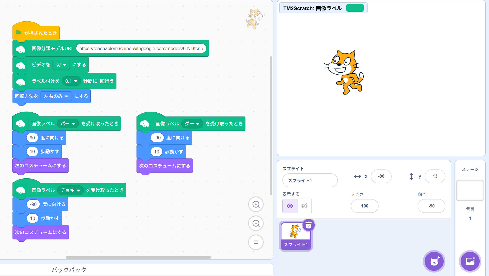
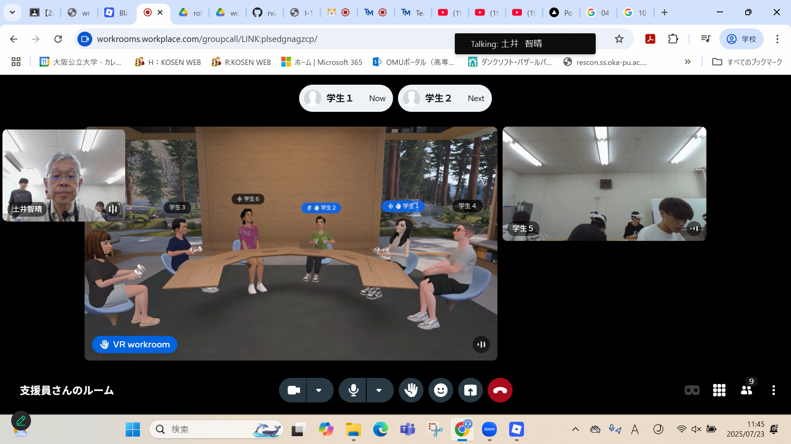
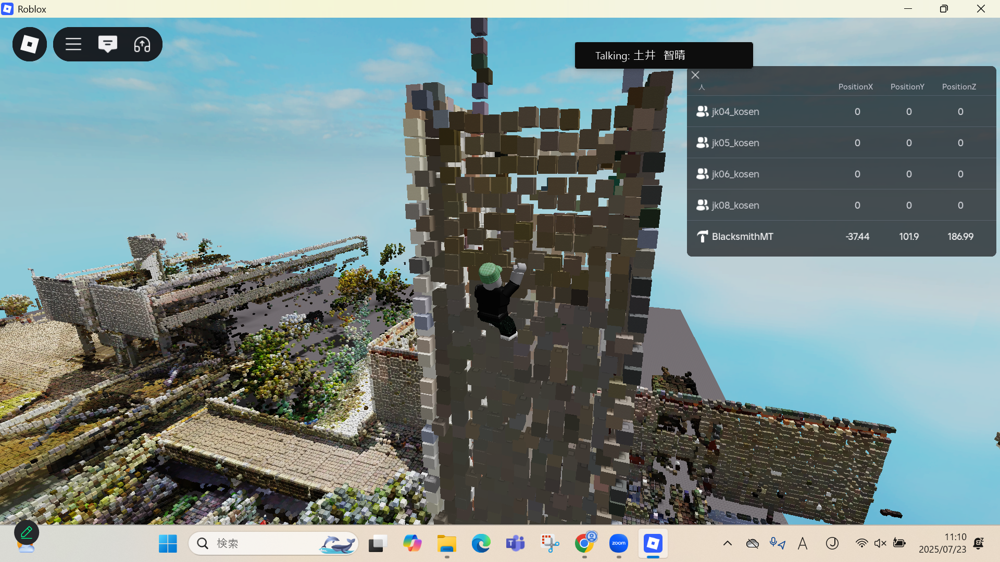

第2週目
2-1 2週目のレポートをHTMLで作る
1.内容
大量に画像を撮影し機械に読み込ませて学習させて今映っているものが何か判断させるシステム。
学習させたAIをストレッチ3のプログラムに組み込んで読み取れたものに応じてキャラクターを動かすプログラムを作った。
2.感想
1の内容に何書けばいいかわからなさ過ぎて考えるのが大変でした。
前回はまずURLの作成すらできなかったけど、今回はURLの作成も画像の表示も正しく行えてよかったです。
3. 2週目が完成した人は1週目のレポートも完成させる
2-2 機械学習体験

1.内容
大量に画像を撮影し機械に読み込ませて学習させて今映っているものが何か判断させる。
学習させたAIをストレッチ3のプログラムに組み込んで読み取れたものに応じてキャラクターを動かすプログラムを作った。
2.感想
大量のデータを機会に読み込ませると精度がよくなっていたのでもっと画像を撮影しておけばよかったと思いました。
読み取ったデータが少なかったりパターンがあまりにも少なかったりすると判別することができなくなりカメラの前の位置を調整しないといけなくなるので
いろんなパターンのデータを撮っておく必要があると思いました
2-3 VR（バーチャルリアリティー：Virtual Reality）の体験
 
1.内容
VRの世界を実際に体験する。自分のキャラクターを操作して3Dの空間を自由にいろいろ動き回ったり人と会話したりできる。
チャットや音声会話を使ってほかの人とコミュニケーションをとったり座席の変更をしたりできる。
2.感想
私の視力が悪く眼鏡がVRゴーグルの中に納まらなかったのでか表示される文字が小さくて読めなかったからworkroomsの操作が一切わからないまま終わったのが悲しかった。
ロブロックスで一番高いところに上れたときにかなり達成感があって楽しかった。終わった後目が疲れたのと画面酔いがきつかった。